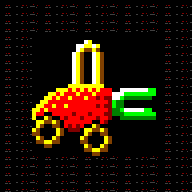

DIGGER
Digger Remastered · versión web
El juego avanza a ritmo fijo medido con el reloj del navegador, no con el refresco de la pantalla: va a la misma velocidad a 60, 90 o 120 Hz y con refresco variable.
Al activarlos se abre el editor sobre la pantalla del juego para colocar y dimensionar el mando mientras lo ves.
Las iniciales de un récord se eligen con la cruceta: arriba y abajo cambian la letra, disparo la confirma e izquierda borra.
Toca una casilla y pulsa la tecla nueva; tocarla dos veces la deja vacía. Cada acción admite dos teclas. Si la tecla ya estaba en uso, se quita de la otra acción.
Controles
Sistema
También funciona un mando: cruceta o palanca para moverse, A/B/X/Y para disparar, Start para pausar y Select para volver al título.
Los récords se guardan en este navegador (localStorage). Puedes importar un archivo DIGGER.SCO de la versión de PC.